一．注册
用电脑打开网址 http://mp.toutiao.com 或者点击 点我
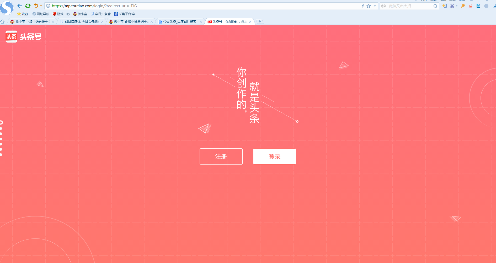
点击注册
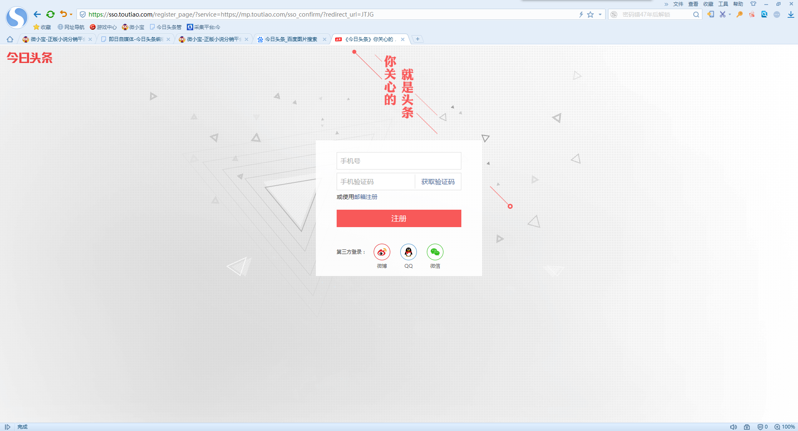
输入常用手机号，填入接收到的验证码，并点击注册按钮
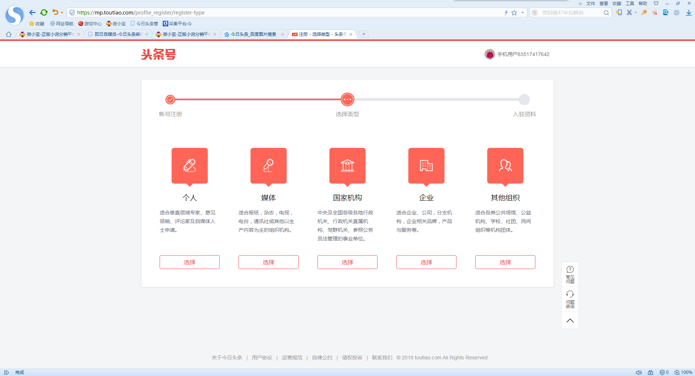
选择类型，建议选择【个人】
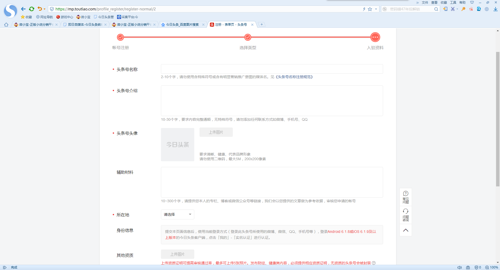
入驻资料页面，按提示填写好相关信息，即可！
二．认证
第一步：手机下载“今日头条”APP；
第二步：用手机号+密码登陆“今日头条”APP；
第三步：进入个人中心，点击实名认证，按提示完成认证；
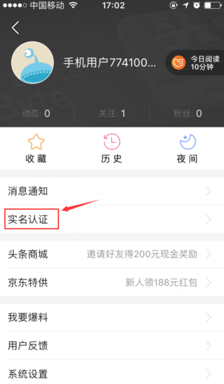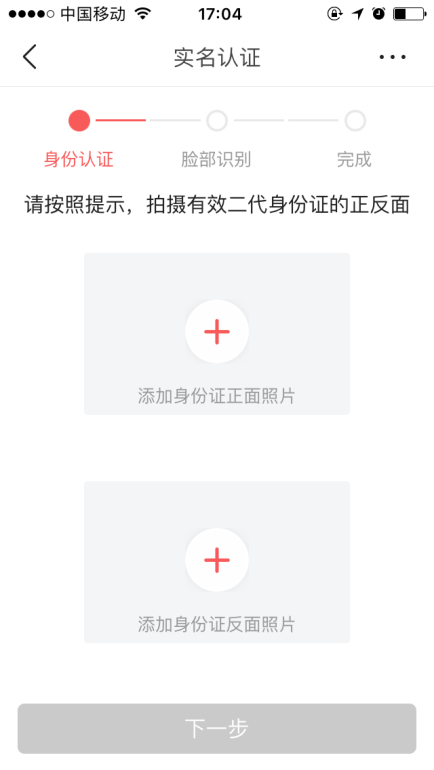
三．下载微小宝客户端
四．登号
第一步：打开微小宝客户端
第二步：添加账号-今日头条
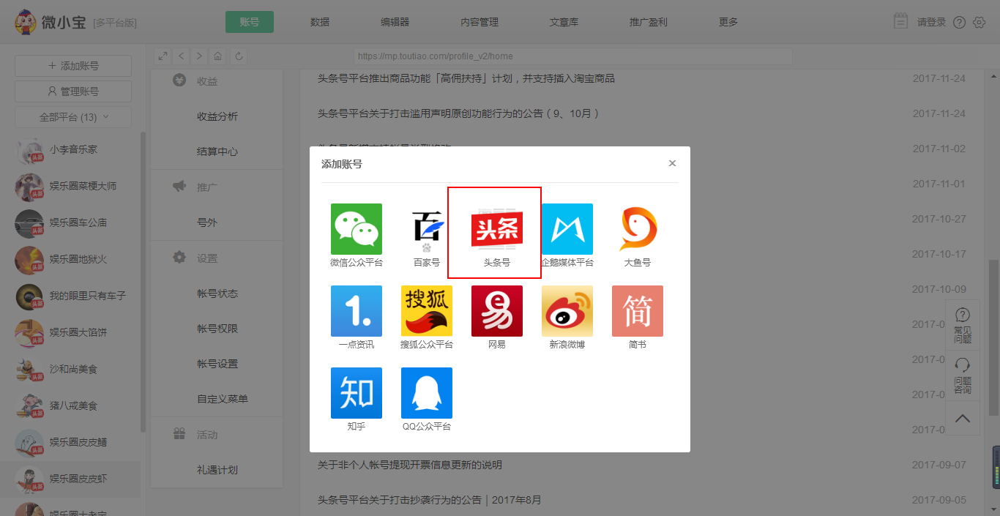
第三步：用手机号+验证码登录
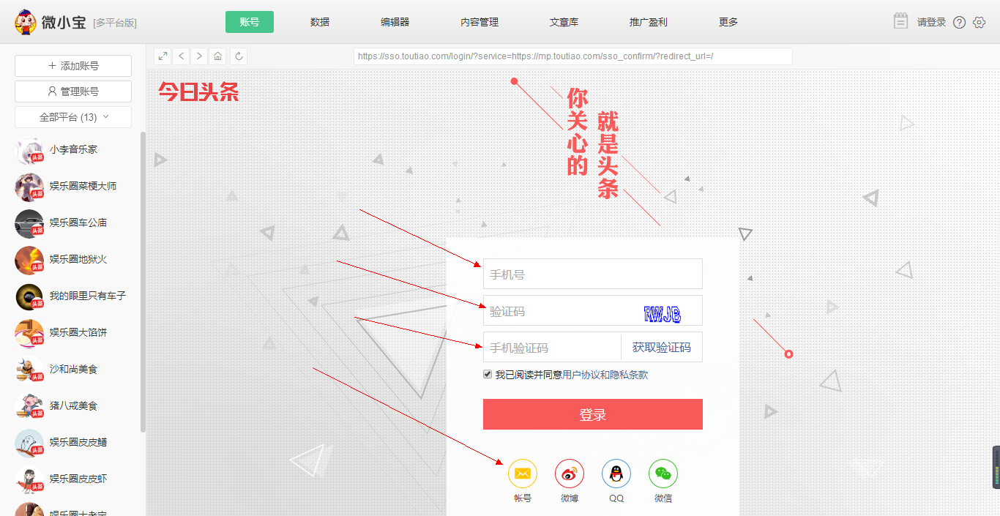
五．发文
1、采集平台
采集平台50元/月，已交学费的学员请找群里的讲师索要，免费提供！
以下2个也可以选择使用
1、蜘蛛侠
2、自媒咖
第一步：选参考图集（推荐做图集，省时间，套路简单）。
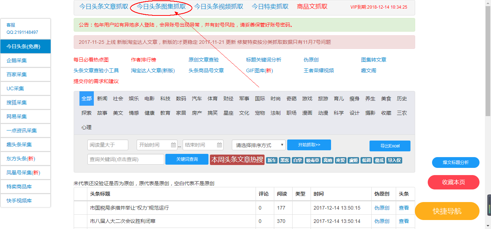
第二步：筛选领域，做的什么领域，就选择什么领域，假如做的是娱乐的，就选择娱乐。
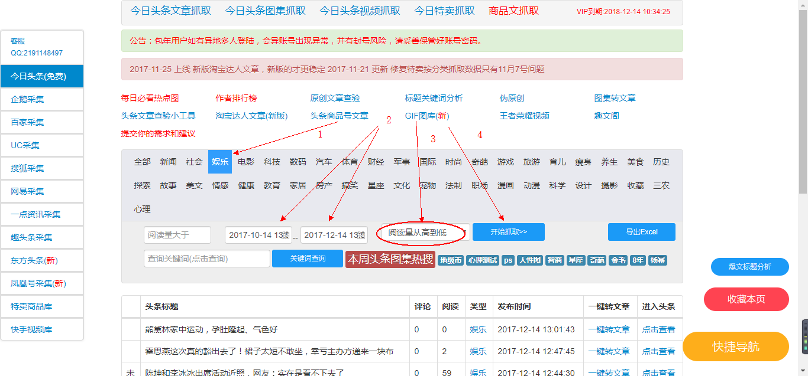
第三步：选择时间区间，一般选择一个月左右，然后阅读量从高到底，选好以后“开始抓取”
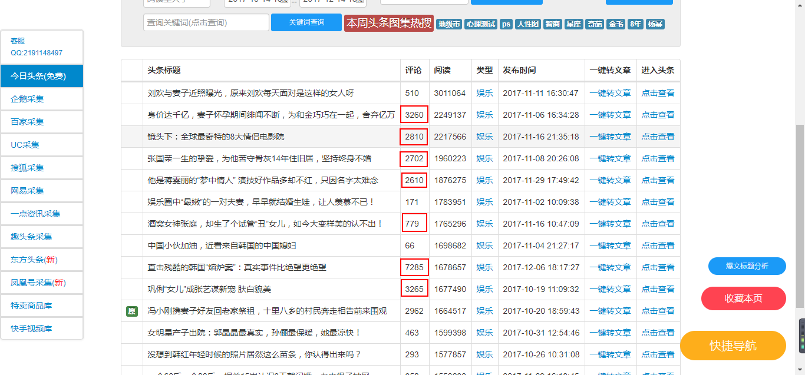
第四步：挑文章，一般挑选评论量比较高的。
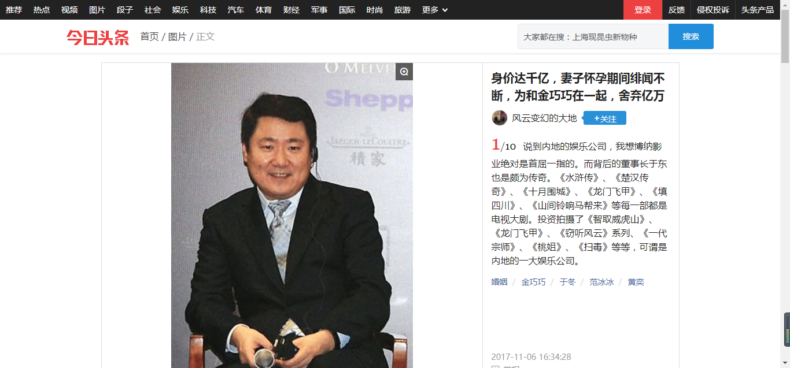
发文的视频教程： 点击观看
六．注意事项
头条目前属于机器为主人工为辅的审核机制，这样就给了解规则的一些人创造了很好的“薅羊毛”的条件，不过在“薅”的过程中，千万要注意以下几点事项，避免踩到头条的【红线】，导致账号被封，努力白费！
纯“搬运”的时代已经过去，做原创又费时间，而且不是每个人都能做，那最佳选择只能是【伪原创】。
1、在“伪原创”时，千万要避开有【原创】标识的文章，避免被原作者投诉，这种几乎一投诉一个准，一篇就可以让你扣40分，2篇就可以让你这个号废掉，3篇相当于你这个月的工作都白费，之前没有打款的钱全部打水漂。
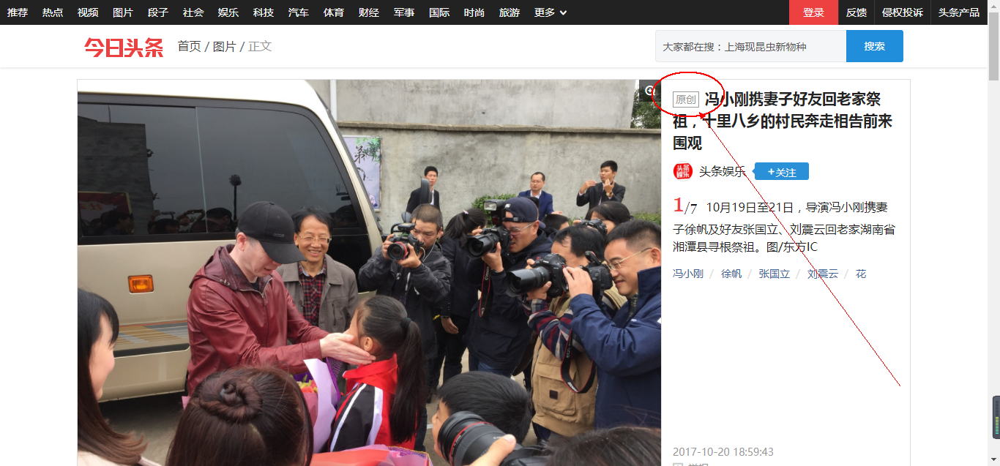
2、图片不能用另存为，一定要截图，最好的话就是用类似图片，替换掉原来的图片，比如一篇文章说到范冰冰，但又不是特定场合的，就可以百度用另外一张的图片替代掉，图片要保持无水印且高清。（视频里面有说明）
3、【这个很重要】接下来就是文字部分了，文字如果是照抄，或者把它复制过来之后，稍微做改动，那是很难有推荐的了，而且也费时间；最简单有效的方法，就是在截图（保存图片）的时候，将文字内容稍微看下，最后用自己的话将几张图片要说的事情概括一下，这样既可以避开机器的检测，有益于推荐，也比较省时间，是目前最简单有效的方式。至于标题，不改动关系也不是很大，如果要改，尽量比原标题改得好；
4、关于标签，机器是识别不了一整句话的，它只能将一句话拆分成N个词组（标签），然后根据相应的标签，来推荐给匹配的用户，所以在文章踩标签的时候，显得很重要，前期比较没有经验的时候，可以照着原文章的标签（即原文章出现的标签不给它改动）；后期跟着团队整理出来的热门标签，进行选题和标题优化。
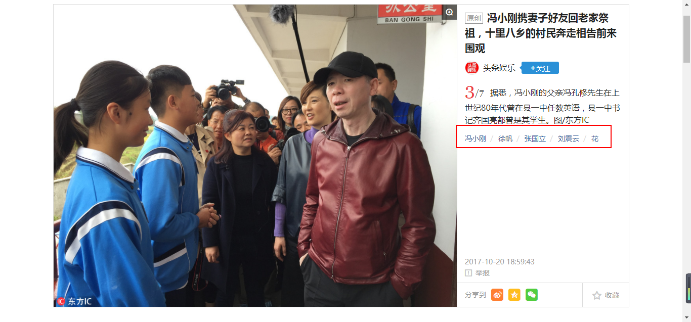
容易犯的几个问题：
1、标题不能使用【句号】。只能使用：问号（？） 、感叹号（！）、 逗号（，） 、冒号（：） 、双引号（“ ”）、 书名号（《》）、破折号（——）、 波浪线（~）、 竖线（｜）等；且不能使用叠加的问号或感叹号。比如（十分壮观！！！）这是错误的，只能（十分壮观！）
2、发图集时，不能发图片的文字过多的或者是动图，常见的有表格、聊天记录、微博截图等。
欢迎你加入即日自媒体，以上的规则仅针对新手入门使用！在后期运营过程中，我们更期待，也更欢迎大家以自己的内容去创作！